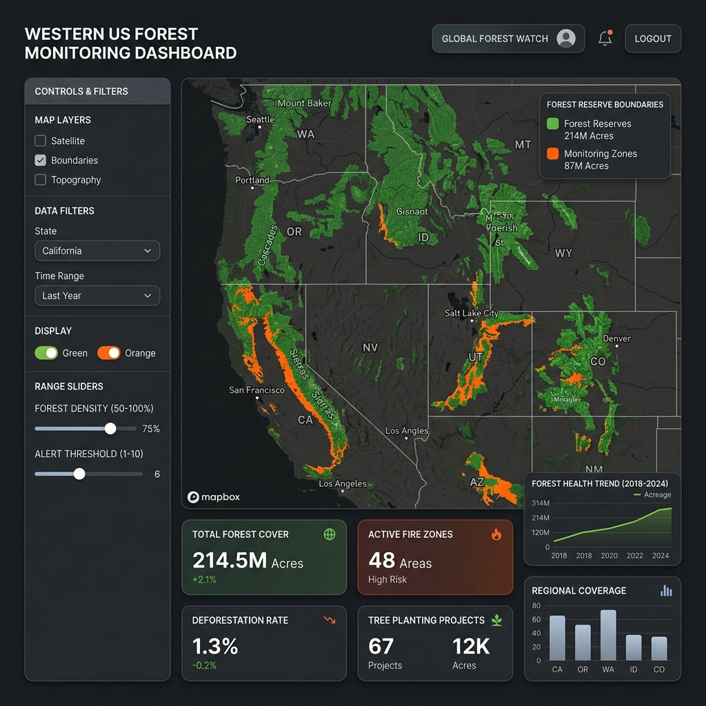

Prioritizing dry forest restoration to secure municipal water supplies in the Western United States.

Wildfire risk in dry forests threatens critical water infrastructure. This model enables decision-makers to prioritize mitigation where ecological hazards and human dependency overlap.
We trace municipal water intake dependency back to the headwaters. Areas that supply water to large populations, or where the "people-per-drop" efficiency ratio is highest, are weighted heavily. This ensures that forest management directly protects the water security of millions of residents.
Dry forests (ponderosa pine and mixed conifer) are our primary management target because their natural fire regime—frequent, low-intensity fires—has been disrupted by a century of suppression. This makes them highly responsive to fuels reduction, thinning, and prescribed burning. Thinning these forests reduces the risk of high-severity crown fires, which cause massive soil erosion and sedimentation in reservoirs.
When high-severity fires occur in dense dry forests, they bake the soil, creating a water-repellent (hydrophobic) layer. Subsequent rain events lead to rapid run-off, severe soil erosion, debris flows, and sedimentation. This can physically clog intake pipes, silt up reservoirs, and overwhelm water treatment facilities with ash, forcing shutdowns.
A transparent, reproducible, and cached data pipeline linking climate, hydrology, ecology, and population.
We align the spatial resolution, coordinate reference systems (CRS), and bounding extents of the primary raster datasets covering the Western United States. All rasters are resampled to a standardized 1 km² grid in the Albers Equal Area projection (EPSG:5070).
For each 1 km² grid cell, we compute the baseline annual water yield volume. This calculates the net physical volume of water produced by the landscape after accounting for atmospheric losses and ecological transpiration.
Net Yield (mm) = MAP − Eref · F
Where F represents the crop coefficient factor adjusted for forest vegetation density.
Net Yield Volume (m³) = Net Yield (mm) · Cell Area (m²) / 1000
We trace the path of municipal water from physical intakes upstream. Using the WUS_PublicWaterSources geodatabase, we construct the True Source Area for each water system. Intakes and system connections are resolved using a Breadth-First Search (BFS) graph traversal.
We then intersect these True Source Areas with the US Forest Service Fireshed Registry (polygons of roughly 100,000 acres representing fire-management scales) to create spatial overlap fragments.
Finally, we aggregate the fragment metrics to the parent Fireshed scale. Each fragment represents the overlap of a Fireshed and a Source Watershed. The score combines the social importance of the water source with the density of the dry forest overlay.
For each fragment, we compute the percentage of its area covered by Dry Forest (Pct_DF). This is our indicator of wildfire risk exposure: dense dry pine and mixed-conifer forests represent the heavy fuel loads most vulnerable to severe fire and subsequent erosion.
Decision-makers choose how populations are factored in at the watershed scale:
PPD = Population / Total_Water_Yield_Volume
Beneficiaries = Population
We combine the normalized Social Metric and Dry Forest Coverage (Pct_DF) into a single Fragment_Score using one of two formulas:
Score = w1 · Norm(Social_Metric) + w2 · Norm(Pct_DF)
Score = Norm(Social_Metric × Pct_DF)
Since a fireshed can overlap multiple watersheds, its raw score is the sum of all its fragment scores. This raw score is normalized from 0.0 to 1.0 to produce the final Fireshed Priority Score.
Adjust the model weights and social weighting target to see how the prioritization formulas behave in real-time. Verify how different policy choices shift the ranks of sample firesheds.
All datasets used in this model are public, peer-reviewed, and standard across federal and state agencies.
Mean Annual Precipitation (MAP) and monthly reference evapotranspiration (Eref) normals (1991–2020) at 800m resolution. Oregon State University.
Access SourceExisting Vegetation Type (EVT) contemporary dataset. Reclassified to separate Dry Forest communities prone to wildfire hazard.
Access SourceUS Forest Service Fireshed Registry (2020 version, RDS-2020-0054-4), representing ~100,000-acre management zones to map source fire threat.
Access SourceWestern US Public Water Sources dataset (Release v2.0), resolving public water intake points, system interconnections, and populations served.
Access Source